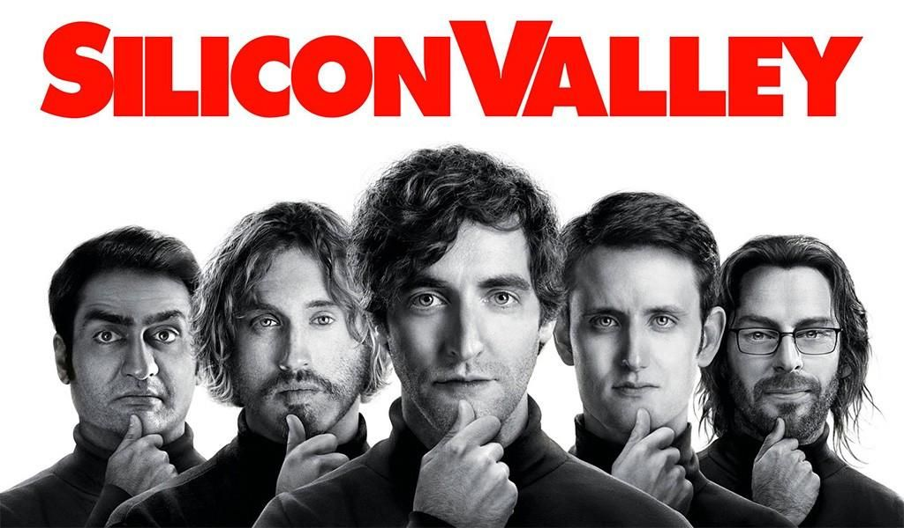

 "Silicon Valley is an American comedy television series created by Mike Judge, John Altschuler and Dave Krinsky. The series focuses on five young men who found a startup company in Silicon Valley, and parodies Silicon Valley culture. It premiered on HBO on April 6, 2014, running for a total of six seasons of 53 episodes The series finale aired on December 8, 2019."
"Considering the impact silicon valley has on our lives , I'm surprised how rarely pop culture gets it right . To understand how it works today , You must watch HBO silicon valley show learn more!"